NTBG Madagascar & South Africa
- National Tropical Botanical Garden
- presents
- The Botany of Madagascar & South Africa Tour
OCT 31, 2008 – NOV 18th, 2008
-
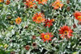View Slide Show of trip
In Country Itinerary - November 2nd – 17th, 2008
Day 1 (November 2, Sun.): Antananarivo, Madagascar
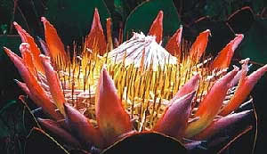Group members not scheduled through Terra Nova Travel will meet at the Johannesburg Airport to board the morning flight to Antananarivo.
Welcome to Madagascar! Your flight arrives in Antananarivo, Madagascar. On arrival, pass through Immigration, collect your luggage, and clear Customs. Proceed into the arrivals area where your guide will be waiting for you holding a sign with NTBG on it. You will be transferred to Palissandre Hotel & Spa.
Palissandre Hotel & Spa is perched on the slopes of a hill, 5 minutes drive from the business centre of Antananarivo (Tana). The hotel enjoys stunning views over the town. Accommodations are in 48 spacious rooms, reflecting traditional Malagasy architecture with pink-colored bricks, Matasoa stone, rosewood and marble.
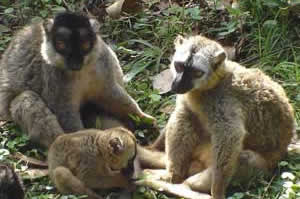The hotel offers all the facilities of a modern business and leisure hotel. There are 42 Standard and 6 family suites. All rooms are equipped with TV, air-conditioning, IDD telephones, in-room safe, mini bar, en-suite bathroom with shower, hairdryer and writing desk.
There is a brand new small gym and spa. You will enjoy meals at the Garden Restaurant with umbrellas and a swimming pool with recliners.The excellent La Table des Hautes Terres restaurant is also available. After settling in, you will dine this evening at your hotel.
Palissandre Hotel & Spa – Welcome dinner.
Days 2, 3 & 4 (November 3 Mon., 4 Tue. & 5 Wed.): Berenty, Madagascar
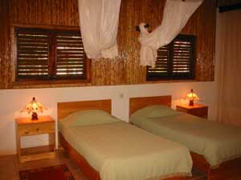After breakfast, your driver will collect you from your hotel and transfer you to Ivato Airport where you will meet your scheduled flight to Fort Dauphin (Taolagnaro), on the far South-east coast. On arrival, your local guide will be waiting to transfer you directly to the Berenty Reserve. Berenty, a privately run reserve, is in the south-east corner of the island and is about 30m above sea-level. Berenty located, about 80 kilometres to the west of the airport, but your road journey will take approximately three to four hours as the road is in poor condition. En route from the airport you will pass through paddy-field after paddy-field. As you travel on you will view lychee and jackfruit trees and pass through stands of the niaouli tree in Madagascar, the introduced Melaleuca quinquenervia. Along the way you will also see some Antanosy memorial stones and pass through a transitional zone, part of the Andohahela National Park set aside to conserve the endemic Triangle palm, before entering the dry Spiny Forest zone with its characteristic baobab and Octopus trees.
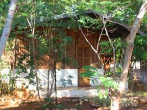The accommodations at Gite de Berenty Lodge consist of 13 very basic bungalows situated in a half circle near a breakfast/tea room area. Each bungalow has a ceiling fan, a small veranda with a deck chair which is perfect for observing the very gregarious resident lemurs. In Berenty at the entrance of the reserve is an interesting museum offering a detailed history of the South, the various tribes, tribal dress and fauna/flora. The actual reserve has well laid out paths which facilitate viewing the various wildlife, especially the famous the Sifaka, Ringtail and Brown lemur. Berenty is surrounded by huge sisal plantations which offer a complete contrast to the Andohahela spiny forest that you drive through to get to Berenty.
You spend the next two days exploring Berenty. The spiny desert flora is remarkable plus there is also some good dry gallery forest along the Mandrare River. Berenty also offers great birding, as well as interesting reptiles and invertebrates.
Gite de Berenty Lodge – Breakfast, lunch, dinner & scheduled activities.
Days 5, 6 & 7 (November 6 Thur., 7 Fri. & 8 Sat.): Perinet, Madagascar.
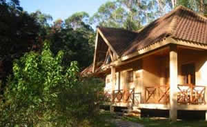Today after breakfast and checkout procedures, you will transfer back to Fort Dauphin and check in for your flight to back to Antananarivo. On arrival, collect your luggage and meet your driver for your private transfer to Perinet Reserve. This is a 3-4 hour drive by paved (twisty) road. There is lots of picturesque scenery en-route. You spend the next three nights at Vakona Lodge.
Vakona Lodge is located 15 minutes by car from the main entrance to the Perinet Reserve. The accommodations consist of bungalows with heaters, mini bar and en suite bathroom with hot water. A lounge (with TV/ Video) plus open plan restaurant, which services delicious meals, are built around a fireplace. There is a small souvenir shop. Board games, snooker table, swimming pool, horse riding and table tennis are available.
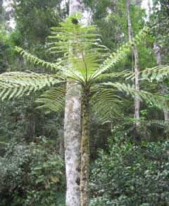The next day you will spend the entire day exploring Perinet’s rainforest. To maximize your experience, you will rise early as this is when the birds and wildlife are most active. The trails are not difficult to manage and you will also have a forest guide to accompany you. If lucky you will see Grey Bamboo Lemur, Red-fronted Brown Lemur, Blue Coua, Velvet Asity and perhaps Nuthatch Vanga. You will also discover reptiles like the Malagasy Tree Boa and Parson's Chameleon. Orchids and other epiphytes festoon the trees.
On your final day in Perinet you can visit the nearby primary rainforest of Mantadia National Park, where the Perinet guides are used to taking visitors. This is more challenging terrain, less developed with steep paths in places but you can do as much as you feel comfortable with. The primary rainforest here is spectacular and wildlife includes Diadems Sifaka, Black-and-White Ruffed Lemurs and birds like Brown Mesite, Pitta-like and Scaly Ground-rollers, Brown Emutail and Madagascar Blue Pigeon.
Vakona Lodge – Breakfast, lunch, dinner & scheduled activities.
Day 8 (November 9,Sun): Antananarivo, Madagascar.
Today you have a final morning in Perinet before returning to Antananarivo by road in the afternoon. You stay at the Palissandre Hotel & Spa again for the night. There will be a special dinner arranged at the hotel with invited experts from the botanical world.
Palissandre Hotel & Spa – Breakfast,lunch & dinner.
Day 9, 10 & 11 (November 10,Mon. , 11 Tue & 12 Wed.): Cape Town, South Africa
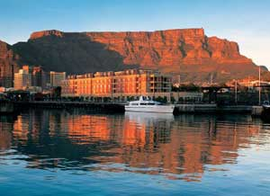Today after breakfast and checkout procedures, your driver will collect you from your hotel and transfer to the airport to meet your scheduled flight back to Johannesburg, South Africa. On arrival after clearing So African Customs & Immigration, you will connect to your onward scheduled flight to Cape Town. When you arrive, collect your luggage and proceed into the arrivals area, where you will be met by our South Africa partners. You will transfer to the Cape Grace.
Cape Grace is a member of the exclusive Leading Small Hotels of the World, a brand extension of the internationally recognized and respected organization, Leading Hotels of the World. It is the prime luxury hotel in Cape Town.
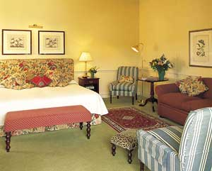With a classically inspired exterior and gracefully elegant within, Cape Grace is set on its own private quay on Cape Town's vibrant Victoria & Alfred Waterfront. Cape Grace's charm lies in its intimate atmosphere, stylish décor and unique personalized hospitality, where you will find staff warm and flexible, with a spirit of unrivalled generosity.
Amenities and Services at the Grace include; One waterfront restaurant, Bascule whisky bar and wine cellar, 24-hour Room Service, complimentary underground and surface parking, laundry, dry-cleaning, and valet services, complimentary Cape Wine and History presentation every evening, complimentary transfer to city bowl area, cafe complete - tea, coffee, orange juice & pastries in the library.
Tonight you will enjoy welcome drinks and a fine dinner at One Waterfront restaurant.
Day 10 (November 11, Tue.): Cape Town, South Africa
This morning, you have a scheduled private full day Cape Peninsula Tour including Table Mountain, inclusive of entry fees and lunch at Harbour House. Tonight you have a free evening to dine at one of Cape Town’s fine restaurants of your choice. The Cape Grace – breakfast (lunch at Harbour House.)
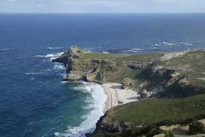
Day 11 (November 12, Wed.): Cape Town, South Africa
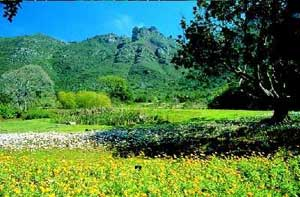Today you have a morning tour of Kirstenbosch Botanical Gardens, inclusive of entrance fees and lunch in the gardens.
Return to hotel with your afternoon free to explore Cape Town or relax at the Cape Grace.
This evening you will dine at Café Africa, a lively and popular dining spot with locals as well as visitors.
The Cape Grace – breakfast & dinner (lunch at Kirstenbosch.)
Day 12 (November 13,Thu.): Franschhoek, South Africa
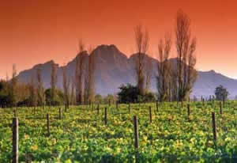Today after breakfast and checkout, you will be collected from Cape Grace for a scheduled private full day Cape Wine Lands tour including entrance fees and lunch.
After a fun day of wine tasting and touring, you will be transferred to Franschhoek Country House for beautiful overnight accommodations.
Set in the picturesque wine-producing valley of Franschhoek, the Franschhoek Country House & Villas offers luxury and indulgence.
This restored manor house and former perfumery dating back to 1890, is situated on the outskirts of the village in the Cape wine lands and is surrounded by enchanting vineyards and majestic mountains.
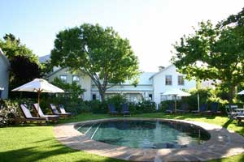The Monneaux Restaurant, where you will dine this evening, occupies the original site of Franschhoeks first parfumerie. Today it is now the heavenly scent of chef, Adrian Buchanan’s cooking that has transformed this former parfumerie into a Cape culinary experience. Even by the Cape’s food & wine capital high standards, Monneaux is an extraordinary success. Listed in the country’s Top 100 list for six years consecutively, and the Top 10 list for two years, the Monneaux won the 2006 American Express Platinum Award for fine dining.
Franschhoek Country House- luxury room – breakfast & dinner (lunch on tour.)
Days 13, 14 & 15 (November 14, Fri., 15 Sat. & 16 Sun.): Hermanus, South Africa
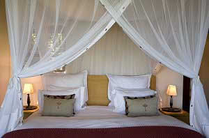Today your driver will collect your from Franschhoek Country House and transfer you to Hermanus where you stay at Grootbos Private Nature Reserve.
You will greeted with a smile and welcomed with a glass of fine South African sparkling wine, as all guests at Grootbos are made to feel instantly special.
You stay at the classic Garden Lodge, set in a lush indigenous surrounding. Set among the ancient Milkwood trees, the large private suites give guests a chance to unwind, surrounded by the splendors of nature and pampered by five star hospitality. From each luxury suite you can admire the sunsets over the ocean or start the day in tune with the forest birds.
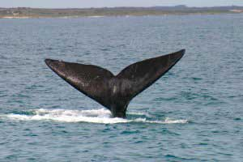Strolling between your suite and the main lodge, winding pathways will guide you past the largest Milkwood forests in the world. Grootbos has local resident guides who will provide insights into the areas indigenous plants which are unique to this environment.
You have the next three days and two nights to explore the lovely area from incredible flora, to beachcombing, to whale watching. On the morning of November 15th, you have a scheduled Marine Boat trip.
Grootbos Garden Lodge - All meals & scheduled activities.
Day 16 (November 17, Mon.): Depart
After over two glorious weeks, it’s time to pack up all you camera gear and make ready for the journey home. After breakfast and checkout procedures, your driver will collect you from your lodge and transfer you back to Cape Town International Airport to meet your scheduled departure flight. If continuing directly back to the mainland USA, you will arrive home on Tuesday, Nov 18th. (Extension available too-i.e. a short safari)….
-
Pricing (not including airfare):
- For 5-7 participants: $10,382 per person, double occupancy. Single supplement is an additional $2,500.
- For 8-12 participants: $9,410 per person, double occupancy. Single supplement is an additional $2,500.
- Click here for a printable copy of trip details, booking forms and the following itinerary in Adobe PDF format.
-
You will need Adobe Acrobat Reader to view this file - if you do not have the program on your computer, it is free and available at

- Oct. 31, Friday: Tour members depart mainland USA for Johannesburg, South Africa.
- Nov. 01, Saturday: Arrive Johannesburg and transfer to hotel where you will spend the night.
-
Nov 02, Sunday: Transfer to Johannesburg airport for flight to Madagascar.

Terra Nova Travel, LLC
2154 NW Aspen Ave.
Portland, Oregon, 97210
Email Me